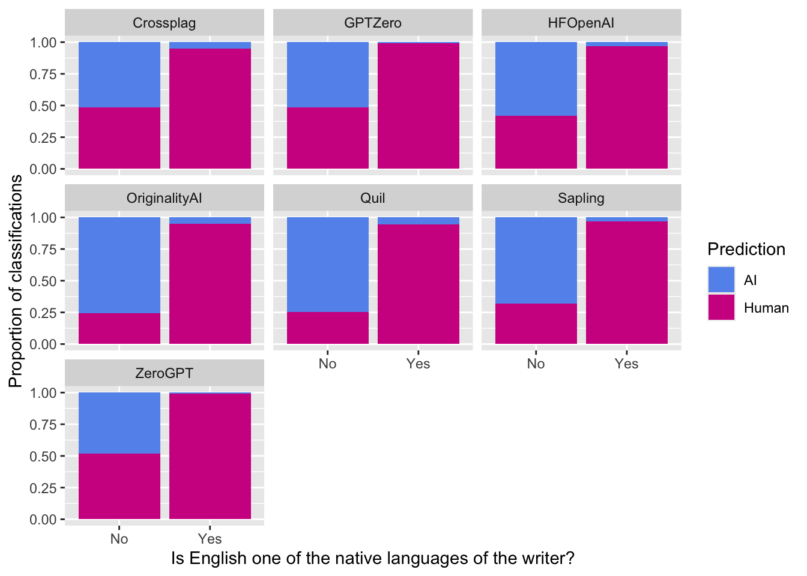

2 + 2[1] 4Math 141
Quarto is an open-source tool for writing about our data work.
To include R code and output, you need to create an R chunk. Here’s an example R chunk:
R chunk are helpful for running the code in your document.
R to run all the chunks above the current chunk.
R chunk of the document.R to run all the code in the current chunk.
R chunk include:
R chunk into the document by clicking on the green button with a plus sign and C in the panel at the top of the document or with the shortcut: Command+Alt+i (on Macs) and Control+Alt+i (on Windows).Useful definition: People refer to the R session that loads without any add-ons as base R.
Base R contains lots of useful commands to analyze data. However, people have developed new commands which are not packaged in this standard version of the program. Therefore, people create packages which contain these new commands.
Whenever we want to use the commands from a package, we need to load the package.
Below is the code that loads the palmerpenguins package in your Quarto document. You will need to run the code (as described above) if you want palmerpenguins to be loaded in your RStudio Session.
Go to the Packages tab in the lower right. Notice that palmerpenguins is listed and if you ran the code above, then it is loaded so the box next to palmerpenguins should be checked.
You may want to use a package that is not listed in the Packages Tab. In this case, you will need to install it first, which can be done using the “Install” button (if the package is shared via the Comprehensive R Archival Network).
You only need to install a package once but you need to load a package (using the library() function) every time you want to use the commands in the package.
Clicking the Render button tells R that you want to compile the contents of the Quarto document into an output document.
Find the Render button and click it. You may get a message to install some R packages. Allow it. You may also get a message about allowing popups. Allow them.
Examine the output file. This file is saved in the same directory as your Quarto (qmd) file but with a different extension (pdf).
It can take some time to understand the workflow for interacting with R and Quarto documents. That is okay! We recommend the following workflow:
Make changes to the Quarto document.
If the changes involve new R code, then run the code (using one of the options described above) to make sure the code behaves how you are expecting. Keep iterating until you are happy with the code.
Render the document.
Look over the output document.
Is the code displaying how you want?
Does the expected output (graphs, tables, etc) appear?
Does the output look correct?
If the output document looks good, start back at the top and make new changes. If not, go back to your code and problem-solve.
Run the following R chunk to get a sense of the beautiful data work that is in your Math 141 future:
# Load libraries
library(detectors)
library(tidyverse)
# Wrangle data
humans_only <- detectors %>%
drop_na(native)
# Graph data
ggplot(data = humans_only, mapping = aes(x = native,
fill = .pred_class)) +
geom_bar(position = "fill") +
facet_wrap(~detector) +
labs(x = "Is English one of the native languages of the writer?",
y = "Proportion of classifications",
fill = "Prediction") +
scale_fill_manual(values = c("cornflowerblue", "violetred"))
Notice the similarities and differences of how the code and output are displayed in this (the quarto) document and the output (pdf) document.
Welcome to the world of R and reproducible data work!